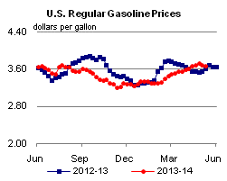
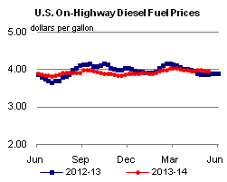
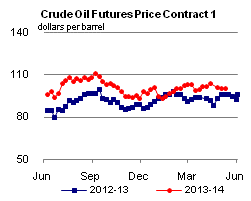
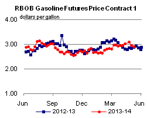
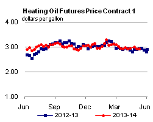
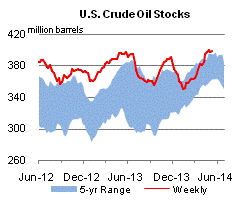
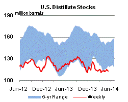
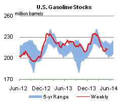
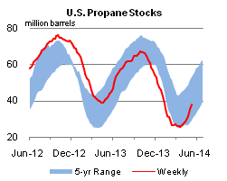

Released: May 14, 2014
Next Release: May 21, 2014
Lower crude feedstock costs contribute to North American refinery profitability
Last year was the third year in a row that North American refineries showed considerably higher profitability than European refineries as measured by earnings per barrel processed. While many factors contribute to refinery profitability, lower North American crude oil prices compared with world prices have been a key factor driving this outcome. North American refiners' earnings per barrel processed were more than $7 per barrel (bbl) higher than their European competitors in 2013, based on an analysis of 26 energy companies with refinery operations that submit financial and operating information by segment in annual reports to the U.S. Securities and Exchange Commission.
Financial data by segment allow comparisons of just the refining business of global integrated companies—those that explore and drill for oil as well as refine it—with those that only refine crude oil into products. Earnings per barrel processed (Figure 1) takes a company's earnings from its refining and marketing segment and divides it by its annual refinery runs, which is a useful measure for comparing large companies with smaller ones.
{kind=link}
In this analysis, EIA compared 13 companies based in North America and 13 in Europe. Ten of these companies have nearly all their refinery throughput in North America, 10 others have nearly all their throughput in Europe, and 6 have refineries throughout the world. Total earnings in the refining segment for each grouping was divided by its total annual refinery runs to estimate earnings per barrel processed as shown in Figure 1. The scale of refinery runs varied widely across the companies in the sample selected, with 59,000 barrels per day (bbl/d) being the smallest and 4.6 million bbl/d being the largest in 2013. Earnings in the refining segment ranged from a loss of almost $2 billion for one company to a profit of $4.3 billion for another. Total refinery throughput for these companies averaged 25.6 million bbl/d in 2013, approximately 56% of total OECD liquid fuels consumption.
Refining profitability across the three groupings tended to move together during the 2004-10 period. European and North American refineries benefitted from a broad increase in gasoline and distillate prices from 2004 to 2006, with profitability falling during the 2008-09 financial crisis. However, as the global economy recovered after 2010, many North American refineries benefited from relatively lower prices for two key inputs, crude oil and natural gas. Increasing production of both crude oil and natural gas contributed to lower feedstock costs in North America compared to international prices.
As North American crude oil production increased from new tight oil plays, U.S. imports of crude oil steadily decreased. Production increases since 2011 led to bottlenecks in the Midcontinent, depressing U.S. average refiner acquisition costs compared with Brent (North Sea), with discounts averaging more than $9/bbl from 2011 to 2013 (Figure 2). This crude discount tended to benefit companies with refineries in the interior of the United States and Canada.
{kind=link}
In 2013, Gulf Coast refiners began to see increased earnings because of lower crude costs after some of the infrastructure bottlenecks to move crude oil to the Gulf Coast were removed and prices of Light Louisiana Sweet (LLS) crude began to trade at a discount to Brent. Product prices in North America, however, continued to be driven by international crude oil prices and petroleum product markets. Crack spreads, the difference between the purchase price of crude oil and the wholesale selling price of refined products, on the Gulf Coast increased in late 2013, and have remained high in 2014.
North American refineries have been able to run at relatively high rates because their crude oil and natural gas costs were low and global product prices remained high. Refinery runs for North American companies rose 27% from 2010 to 2013, while the European companies' refinery runs declined 11%. The result was an increase in product exports, particularly from the U.S. Gulf Coast. As U.S. refineries increased runs to produce distillate, they also produced more gasoline and have taken some market share from Europe in Latin American and West African markets.
In 2014, U.S. crude prices remain discounted to Brent. Additionally, relatively cheaper natural gas prices in North America continue to provide U.S. and Canadian refineries with further energy feedstock price advantages compared with refineries in other parts of the world. Preliminary financial results from the first quarter suggest that North American refiners are maintaining higher profitability than their European rivals.
May Drilling Productivity Report indicates continuing oil production growth with upward revision in the Permian Basin
The May update to the Drilling Productivity Report (DPR) indicates continuing oil production growth in the key oil-producing regions. Cumulatively, in the Bakken, Niobrara, Permian, and Eagle Ford, oil production is expected to increase by 74,000 bbl/d in June 2014. The monthly growth rate is 4,000 bbl/d more than in May 2014. With new data from the Railroad Commission of Texas, the Permian region new-well oil production per rig was revised up to 132 bbl/d. EIA expects the Permian region to reach 1.535 million bbl/d of oil production in June 2014 as the rig count in the region reaches record highs.
Gasoline prices mostly decrease, diesel fuel prices down nationwide
The U.S. average retail price of regular gasoline decreased by two cents this week to $3.67 per gallon as of May 14, 2014, up seven cents from this time last year. Prices decreased in all regions except the Rocky Mountains, where the average rose one cent to $3.51 per gallon, and the Midwest, which increased by less than a penny to remain at $3.60 per gallon. The West Coast and Gulf Coast prices each decreased by three cents, to $4.02 and $3.44 per gallon respectively. The East Coast price is now $3.68 per gallon, down two cents from last week.
The national average diesel fuel price decreased two cents to $3.95 per gallon, up eight cents from the same time last year. Prices declined in all regions of the nation, led by a two-cent drop in the Gulf Coast to $3.80 per gallon. The East Coast, Midwest, West Coast, and Rocky Mountains each decreased one cent, to $4.04, $3.92, $4.04, and $3.97 per gallon respectively.
Propane inventories gain
U.S. propane stocks increased by 2.5 million barrels last week to 37.7 million barrels as of May 9, 2014, 4.1 million barrels (9.7%) lower than a year ago. Gulf Coast inventories increased by 1.4 million barrels and Midwest inventories increased by 0.8 million barrels. East Coast inventories increased by 0.2 million barrels and Rocky Mountain/ West Coast inventories increased by 0.1 million barrels. Propylene non-fuel-use inventories represented 9.5% of total propane inventories.
Text from the previous editions of This Week In Petroleum is accessible through a link at the top right-hand corner of this page.
|  |  | ||||||
| Retail Data | Change From Last | Retail Data | Change From Last | ||||
| 05/12/14 | Week | Year | 05/12/14 | Week | Year | ||
| Gasoline | 3.668 | Diesel Fuel | 3.948 | ||||
|  |  | ||||||||||||||||||||||||||
|
 | ||||||||||||||||||||||||||
| *Note: Crude Oil Price in Dollars per Barrel. | |||||||||||||||||||||||||||
|  |  | ||||||
|  |  | ||||||
| Stocks Data | Change From Last | Stocks Data | Change From Last | ||||
| 05/09/14 | Week | Year | 05/09/14 | Week | Year | ||
| Crude Oil | 398.5 | Distillate | 112.9 | ||||
| Gasoline | 212.4 | Propane | 37.725 | ||||